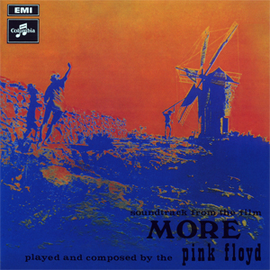
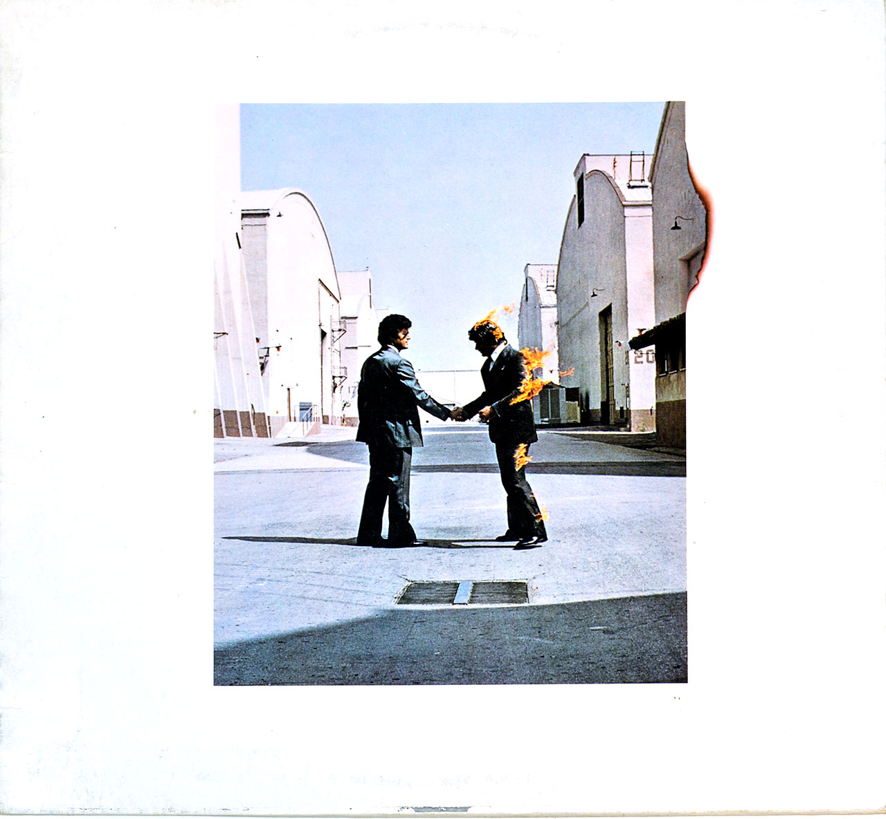
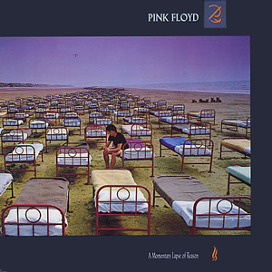

The Piper at the Gates of Dawn is the debut studio album by English rock band Pink Floyd,
released 4 August 1967 by EMI Columbia.The only album made under founding member Syd Barrett's leadership,
it takes its title from chapter seven of Kenneth Grahame's 1908 novel The Wind in the Willows,
which refers to the nature God Pan, and was recorded at EMI Studios in London from February to May 1967 with producer Norman Smith.
The band at the time consisted of Syd Barrett (lead vocals, lead guitar), Nick Mason (drums), Roger Waters (bass, vocals), and Richard Wright (keyboards, vocals).
Barrett also served as the band's primary songwriter, though two tracks on the album are credited to the band collectively and one track was written by Waters.
The album was produced by Norman Smith, who would go on to produce two more albums for Pink Floyd.

A Saucerful of Secrets is the second studio album by the English rock band Pink Floyd,
released on 29 June 1968 by EMI Columbia in the United Kingdom and on 27 July 1968 in the United States by Tower Records.
During recording, the mental health of singer and guitarist Syd Barrett declined, so David Gilmour was recruited to complement him;
Barrett left before the album's completion

More is the third studio album and first soundtrack album by English rock band Pink Floyd. It was released on 13 June 1969 in the United Kingdom by EMI Columbia and on 9 August 1969 in the United States by Tower Records.The soundtrack is for the film of the same name, which was primarily filmed on location on Ibiza and was the directorial debut of Barbet Schroeder. It was the band's first album without former leader Syd Barrett.

Ummagumma is the fourth studio album by English rock band Pink Floyd. It is a double album and was released on 7 November 1969 by Harvest Records.[ The first disc consists of live recordings from concerts at Mothers Club in Birmingham and the College of Commerce in Manchester that contained part of their normal set list of the time, while the second contains solo compositions by each member of the band recorded at Abbey Road Studios.The artwork was designed by regular Floyd collaborators Hipgnosis and features a number of pictures of the band combined to give a Droste effect. It was the last album cover to feature the band.

Atom Heart Mother is the fifth studio album by the English progressive rock band Pink Floyd. It was released by Harvest on 2 October 1970 in the UK, and by Capitol on 10 October 1970 in the US.[It was recorded at Abbey Road Studios in London, England, and was the band's first album to reach number 1 in the UK, while it reached number 55 in the US, eventually going gold there.A remastered CD was released in 1994 in the UK and the United States, and again in 2011. Ron Geesin, who had already influenced and collaborated with Roger Waters, contributed to the title track and received a then-rare outside songwriting credit.

Meddle is the sixth studio album by English rock band Pink Floyd, released on 31 October 1971 by Harvest Records. The album was produced between the band's touring commitments, from January to August 1971 at a series of locations around London, including Abbey Road Studios and Morgan Studios.

Obscured by Clouds is the seventh studio album by the English progressive rock band Pink Floyd, released on 2 June 1972 by Harvest and Capitol Records. It is based on their soundtrack for the French film La Vallée, by Barbet Schroeder. It was recorded in two sessions in France, while they were in the midst of touring, and produced by the band members.

The Dark Side of the Moon is the eighth studio album by the English rock band Pink Floyd,
released on 1 March 1973 by Harvest Records. Primarily developed during live performances,
the band premiered an early version of the record several months before recording began.
The record was conceived as an album that focused on the pressures faced by the band during their arduous lifestyle,
and dealing with the apparent mental health problems suffered by former band member Syd Barrett, who departed the group in 1968.
New material was recorded in two sessions in 1972 and 1973 at Abbey Road Studios in London.

Wish You Were Here is the ninth studio album by the English rock band Pink Floyd, released on 12 September 1975 through Harvest Records and Columbia Records, their first release for the latter. Based on material Pink Floyd composed while performing in Europe, Wish You Were Here was recorded over numerous sessions throughout 1975 at Abbey Road Studios in London.Wish You Were Here received mixed reviews from critics on its release, who found its music uninspiring and inferior to their previous work. It has retrospectively received critical acclaim, hailed as one of the greatest albums of all time, and was cited by keyboardist Richard Wright and guitarist David Gilmour as their favourite Pink Floyd album. It reached number one in the US and UK and Harvest's parent company, EMI, was unable to keep up with the demand. Since then, the record has sold over 20 million copies.

Animals is the tenth studio album by the English rock band Pink Floyd, released on 21 January 1977 through Harvest and Columbia Records. It was recorded at the band's Britannia Row Studios in London throughout 1976, and was produced by the band. The album continues the longform compositions that made up their previous works, including Wish You Were Here (1975). The album received positive reviews from critics and was commercially successful, reaching number 2 in the UK and number 3 in the USA.
The Wall is the eleventh studio album by the English rock band Pink Floyd, released on 30 November 1979 by Harvest and Columbia Records. It is a rock opera that explores Pink, a jaded Rockstar whose eventual self-imposed isolation from society forms a figurative wall. The album was a commercial success, topping the US charts for 15 weeks, and reaching number three in the UK. The Wall is one of the best-known concept albums.With over 30 million copies sold, it is the second best-selling album in the band's catalogue (behind The Dark Side of the Moon) and one of the best-selling albums of all time.

The Final Cut (subtitle: A Requiem for the Post War Dream by Roger Waters)is the twelfth studio album by English rock band Pink Floyd, released on 21 March 1983 in the United Kingdom and on 2 April in the United States through Harvest and Columbia Records. It comprises unused material from the previous Pink Floyd record, The Wall (1979), alongside new material recorded throughout 1982.

A Momentary Lapse of Reason is the thirteenth studio album by the English progressive rock band Pink Floyd, released in the UK on 7 September 1987 by EMI and the following day in the US on Columbia. It was recorded primarily on guitarist David Gilmour's converted houseboat, Astoria.

The Division Bell is the fourteenth studio album by the English progressive rock band Pink Floyd, released on 28 March 1994 by EMI Records in the United Kingdom and on 4 April by Columbia Records in the United States. The Division Bell received mixed reviews, but reached number one in more than 10 countries, including the UK and the US. It was certified double platinum in the US the year it was released, and triple platinum in 1999.
.jpg)
The Endless River is the fifteenth studio album by the English rock band Pink Floyd, released in November 2014 by Parlophone Records in Europe and Columbia Records in the rest of the world. It was the third Pink Floyd album recorded under the leadership of guitarist David Gilmour after the departure of bassist Roger Waters in 1985, and the first following the death in 2008 of keyboardist Richard Wright, who appears posthumously. Gilmour said it would be the final Pink Floyd album